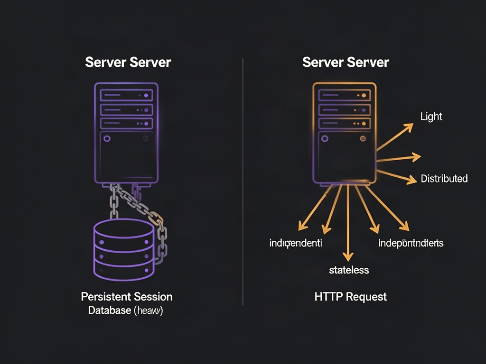
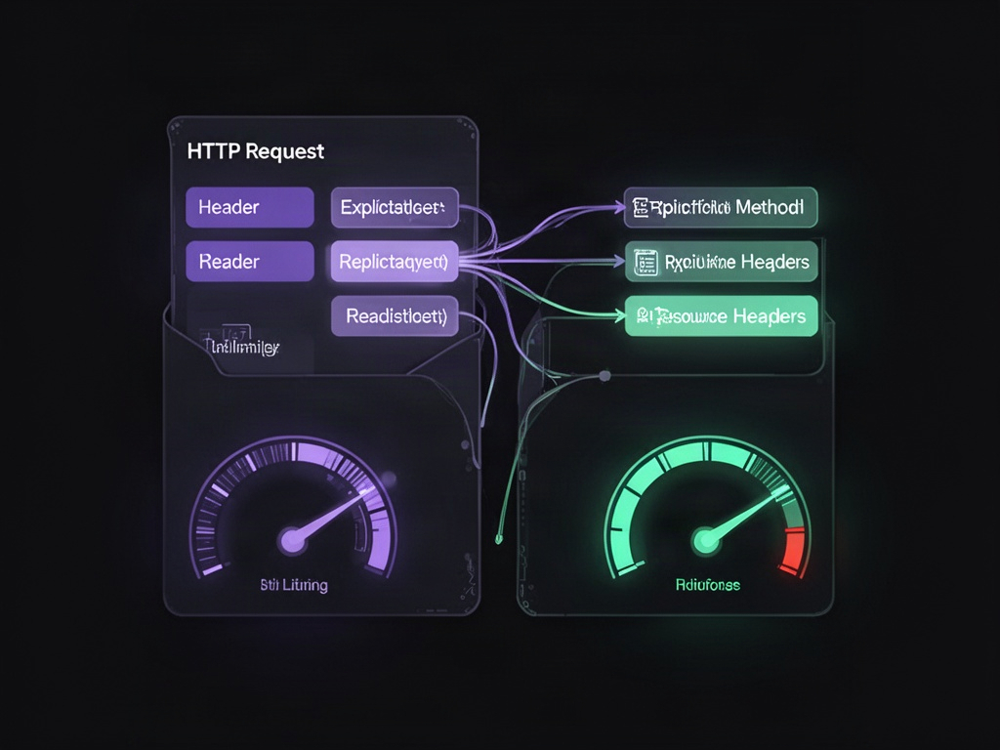
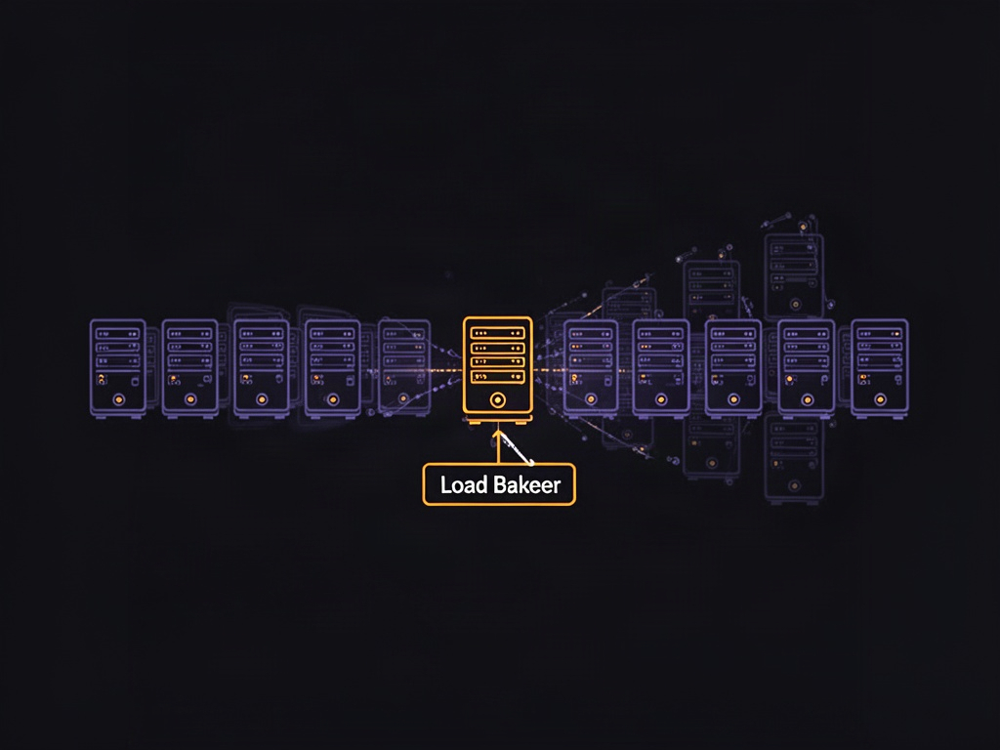

Lembra da promessa de que MCP ia acabar com a necessidade de implementar REST? Ela ainda não se cumpriu de verdade — mas não porque a tecnologia falhou. Foi o mesmo atraso que todo protocolo novo sofre: leva tempo até a infraestrutura amadurecer o suficiente pra adoção em massa acontecer. E com uma mudança recente na especificação, essa maturação acabou de dar um salto real.
A raiz do problema técnico era simples de descrever e difícil de resolver: servidores MCP eram stateful. A aplicação precisava guardar contexto entre requisições — múltiplos usuários batendo no mesmo servidor, cada um com seu próprio estado de sessão vivo em algum lugar. Pra sustentar isso, era necessária uma camada de sessão real: um cache dedicado, algo como Redis segurando estado entre chamadas. E essa camada de sessão é exatamente o que impede rodar limpo em edge ou serverless.
De stateful pra stateless: o que mudou
A mudança central na especificação move o núcleo do protocolo de uma troca bidirecional com estado persistente pra um modelo de request-response mais simples. Na prática, um servidor remoto de MCP passa a se comportar essencialmente como um endpoint HTTP comum — sem sessão obrigatória amarrada, sem estrutura específica do protocolo segurando estado entre chamadas.

O impacto pra quem hospeda é bem concreto: dá pra fazer deploy serverless, rodar em edge, e escalar horizontalmente sem se preocupar em sincronizar sessão entre instâncias. É a diferença entre precisar de infraestrutura com estado dedicada e simplesmente colocar mais réplicas atrás de um load balancer.
Descoberta de capacidades antes de qualquer chamada
Junto com a mudança de modelo, entra um método de descoberta que todo servidor é obrigado a implementar. Ele anuncia versão, capacidades suportadas e identidade antes de qualquer chamada de ferramenta acontecer. Se o cliente tentar chamar uma ferramenta com versão incompatível, o servidor responde com erro de versão explícito — em vez de falhar de forma silenciosa ou ambígua.
Isso resolve um problema real de quem já tentou colocar um proxy ou gateway na frente de um servidor desse tipo: antes, uma chamada simples pra listar as ferramentas disponíveis chegava misturada, no nível do proxy, com uma chamada que de fato executa uma ferramenta — inclusive ferramentas que fazem autenticação externa ou chamadas de rede. Pro proxy, as duas pareciam idênticas: um POST batendo no mesmo endpoint. Isso obrigava manter a conexão aberta até identificar, mais adiante no fluxo, o que estava realmente sendo pedido.
Cabeçalhos explícitos resolvem o problema de limite de taxa

Listar as ferramentas de um servidor deveria levar milissegundos — mas na prática podia travar a conexão por dezenas de segundos, porque a camada intermediária não conseguia distinguir "me diga quais ferramentas você tem" de "execute essa ferramenta agora". Isso é crítico pra controle de taxa: faz sentido permitir que um cliente pergunte quais ferramentas existem com bastante frequência, mas não faz sentido permitir que uma ferramenta de autenticação seja chamada na mesma cadência — ninguém autentica repetidamente em poucos segundos a não ser que esteja tentando algo indevido.
A especificação atualizada resolve isso colocando método e recurso de forma explícita no cabeçalho da requisição. Com essa informação disponível antes mesmo de examinar o corpo da mensagem, é possível aplicar políticas de limite de taxa diferentes por tipo de operação, sem precisar abrir a conexão e inspecionar o payload pra decidir o que fazer.
Estado entre chamadas, só quando necessário
Nem toda aplicação consegue viver sem nenhum estado entre chamadas. Pra esses casos, a especificação prevê um mecanismo específico: quando um servidor precisa manter estado entre chamadas relacionadas, ele emite um identificador opaco gerado pelo próprio servidor, que o cliente passa de volta como um argumento comum nas chamadas seguintes. Deixa de ser uma sessão implícita mantida automaticamente pelo protocolo e vira um dado explícito, visível, que o cliente carrega e devolve quando necessário. A diferença é sutil mas relevante: o estado deixa de ser responsabilidade automática da camada de transporte e vira uma decisão explícita de quem projeta a integração.
Por que isso importa além do detalhe técnico

MCP já passou de centenas de milhões de downloads mensais do SDK, com crescimento acelerado — deixou de ser experimento e virou padrão de facto pra conectar agentes a ferramentas e dados externos. Um protocolo nessa escala de adoção não pode continuar dependendo de infraestrutura pesada de sessão pra escalar. A mudança pra stateless-por-padrão é o tipo de decisão de design que parece pequena num changelog, mas remove o maior atrito prático de quem precisa hospedar um servidor desse tipo em produção: já não é necessário escolher entre simplicidade de deploy e suporte a múltiplos usuários simultâneos — as duas coisas deixam de ser mutuamente exclusivas.
Isso também abre espaço pra um padrão que ainda vai amadurecer bastante: servidores que não só expõem ferramentas, mas também interfaces interativas renderizadas pelo próprio cliente — um passo além de apenas listar funções que um agente pode chamar. Com a barreira de infraestrutura reduzida, a próxima onda de adoção tende a vir muito mais rápido do que a primeira.